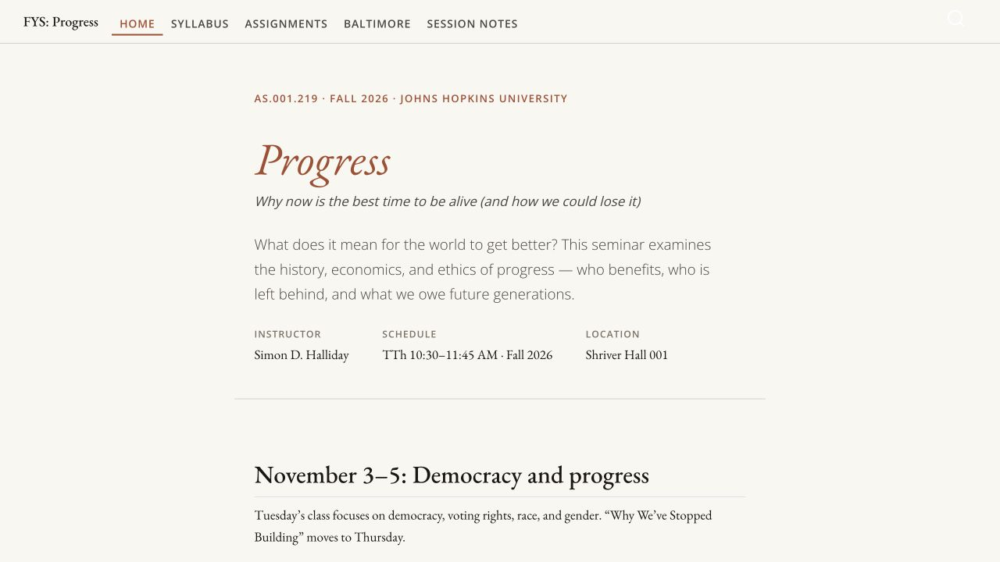

More ambitious work, with limited time
My work at Johns Hopkins involves more administration and high-level decisions than previous jobs did. I (and others at the Center broadly) use Claude and Codex to help with recurring tasks and to attempt teaching and research projects I would previously have struggled to manage. This guide follows the examples in my Southern Economic Association presentation.
The examples describe my working practice in November 2026. I’m not making some claims about increased productivity from an RCT or anything like that. I’m also continuously experimenting, trying products and approaches, and seeing what works for me and my workflow. The steps below are suggestions for adapting the method to your own work.
A useful first experiment: choose one recurring task with an output you can inspect: a reading guide, a comparison of two documents, or a small table extracted from public sources. Define for yourself what a satisfactory result would look like before asking an assistant to make it.
The argument, updated
James Tierney and I argued in our 2024 chapter that AI could reduce instructors’ administrative burdens, improve assessment, and support learning. Working across files, code, and connected applications extends what I can delegate. Scheduled tasks also make some of that work recurring.
The important question for me is whether this helps me spend time on decisions that need my judgment, or makes worthwhile projects feasible. I have not measured the number of hours saved.
For a task you repeat, record the time spent specifying, waiting, reviewing, and correcting, along with the cost and whether the result was usable. Compare a few similar tasks before drawing conclusions. Feeling faster and finishing faster need not coincide; the research notes below explain why that distinction matters.
Halliday and Tierney’s chapter: details and abstract · Author’s appendix
Three guiding principles
- Spend tokens on planning. My practice is to use the strongest model I can afford to help define the task and its checks, then give cheaper models bounded work where they can meet the standard. I switch to planning mode in the appropriate model; carefully evaluate the plan (and change it if I think I need to); then implement with less token-intense models.
- Expand your question; always audit the data. I now attempt projects that were previously hard to conceive I’d attempt or manage. Decide how you’ll check the evidence they produce before scaling up (RAs, you, other models as validators).
- Maintain the method in files and authority with people. Save instructions for recurring work. Retain human responsibility for consequential decisions. Yes, you’re still the bottleneck.
Make the plan concrete: identify the output, the source material, the constraints, the checks, and the decisions that need a person. A long plan is only useful if it improves the work.
Two assistants in one working method
I have used Claude for editorial review, reusable skills for coauthors, email review, Notion task management, and interactive teaching models. I have used Codex for textbook and course sites, research collection and audit tools, and scheduled reporting and research intake. I consider these habits I’ve adopted across my projects that I may edit or review.
I recommend choosing an assistant by the task and the working environment: can it read the necessary material, edit the right files, produce a reviewable result, and operate within your access limits? Test a representative example before committing a large project to a particular setup. For example, for editing Google docs, Codex does this more easily than Claude co-work/code, so when using Google docs I use Codex more than Claude.
For a handoff between assistants, save the goal, decisions, relevant files, unresolved questions, and next action (literally a “handoff memo”). Ask the receiving assistant to inspect that record and the actual work. But always check stuff yourself.
Scheduled work and reusable instructions
Claude helps me review email and manage Notion to-dos. My Codex schedules include a Friday review of external engagement for annual reporting and a Monday review of suggested PPE programs. The latter involves deduplication and checks against official sources. These examples describe configured recurring work; they are not counts of completed runs or estimates of time saved.
Before scheduling your own task, run it manually and check the results – I’ve had to do this a few times and then iterate. Specify where it should look, what it should produce, what counts as a new item, and which uncertainties it should bring back to you. A useful report links to evidence and separates a finding from a proposed action.
Save the process in a project instruction file or reusable skill. Keep it short enough to maintain: purpose, inputs, steps, checks, and approval boundaries. Update the docs when a real failure teaches you something (happens reasonably often as you iterate on a project’s scope). Check a scheduled task’s outputs periodically as things change.
Course sites and classroom materials
Progress and People, Power, and Pay are public Quarto course sites. Codex helped prepare session notes, quizzes, slides, and worksheets around readings I chose. Reading and schedule changes were carried through to the website and Canvas with my review and authorization.

Try one session: supply the assigned reading and the learning objective; ask for a short reading guide and a classroom activity. Check the reading references, the economics, and the level of difficulty. Then inspect the rendered page or worksheet, including on a small screen. Keep the reading list and schedule in an agreed source so revisions can be checked across outputs.
Use a workspace appropriate for the material. Student records, instructor solutions, and licensed readings require deliberate decisions about access and distribution; a public course site should contain only material intended for that audience.
I created skills to do the following for my readings:
- Create “session notes” for a given class session (using a session notes skill).
- Flash cards and MCQs are created with relevant skills.
- Use the Canvas API to sync content across website and Canvas.
- No student-specific information kept on the website (FERPA)
Reusable skills for textbook work
For Understanding Our Economy, recurring review tasks are packaged into shared skills that coauthors can reuse. The presentation describes nine skills in the shared plugin and a Chapter 1 bank of 31 questions: 29 passed an AI QA pass and two required my decision. Passing that pass does not make an item editorially approved.
Our review sequence begins with figure extraction and human verification of the values, followed by MCQ and exercise review. That order matters: a beautifully explained answer can still be based on a misread graph or table.
To adapt this, start with a single chapter and a small assessment sample. Specify the source of truth, the terminology, what the review must check, and how uncertainty should be reported. Preserve the original files. Require references to the particular table or passage that supports each correction.
Better questions start with a better plan
Slide 8 For my work on the textbook, I’ve needed to work on creating new MCQs for reading quizzes. I asked both Claude and Codex to do it in separate runs of tool-specific skills.
In the Chapter 8 comparison, Claude produced 43 questions and Codex’s first pass produced 22. The comparison found no near-duplicates at its similarity threshold. Yet both sets concentrated on similar cognitive demands: definitions, table look-ups, and simple totals. I realized that textual difference alone was an inadequate test of educational variety.
We revised the design rules to ask students to diagnose common mistakes, work under changed constraints, and transfer an idea. This is an example of trial and error changing the task itself (and updating the skills).
Before generating a bank: list the concepts and the kinds of thinking students should practice. Review a few questions against that plan. Check distractors and explanations, and ask whether the item actually requires the intended reasoning. Keep a few accepted and rejected examples to test later revisions of the skill or model. Get others to review questions and provide feedback. Update your rubrics and guides for the agents.
UOE Macro: a working textbook site
UOE Macro brings together 14 chapter drafts for first-year US students, organized around seven principles including aggregation and feedback. The work includes pinned data, step-by-step R figures, a glossary, MCQs, exercises, and the website around them. These are AI-assisted architecture drafts for coauthor development, not an approved textbook.
A larger project needs a shared structure: audience and terminology, chapter dependencies, source conventions, and review responsibilities. Develop one chapter through the full process before assuming that the same approach will work for all of them.
For quantitative content, save the source data and the code that generates the figure. Check values against the cited table. Keep uncertain or proposed content visibly marked until a human resolves it.
Separate editorial decisions from production
In the UOE Macro workflow, coauthors draft and review in Google Docs. A Quarto repository provides structured production, figures, assessments, and checks. A frozen export and comparison form a transfer gate, with named people approving the material before a website or dated PDF is released.
- Agree which document is canonical during drafting.
- Freeze a version for transfer and preserve the previous version.
- Compare content and inspect the rendered outputs.
- Resolve discrepancies and obtain the required editorial approval.
- Publish the approved version with its date and source record.
The website and PDFs are derived outputs from the Google docs & figure workflows. Automating their conversion does not transfer editorial responsibility to the agents. This distinction also makes mistakes easier to trace and corrections easier to reproduce (especially channeled through github).
Building the PPE research database
The PPE project asks what economics PPE and civic-thought curricula require. Codex helped collect and structure official-source evidence; Claude’s audit became work packets for Codex and a research assistant. Coauthors and I retained responsibility for coding decisions.
The November 6 paper sample contains 344 programs, 332 with course coding. The live program requirements explorer has a broader, changing scope. A live collection and a frozen analytical sample should not be treated as interchangeable.
For a similar project, define the unit of observation and inclusion rules before collecting at scale. Retain the source URL, retrieval date, supporting excerpt, coding decision, and unresolved questions. Test ambiguous cases. Freeze the sample used for an analysis so that figures remain reproducible even as the collection grows.
Class in the Curriculum
This project asks how class is taught alongside race, gender, and social justice. The August 4 collection contains 14,524 syllabus documents from UT Austin social sciences and humanities for 2021–2025. Codex built extraction tools, assigned-reading comparisons, and topic-model pilots.
Audits exposed ambiguous title matches and missed readings. Those findings changed the plan: collecting documents was not the same as measuring their contents well. A document count is not automatically a count of unique courses, assigned readings, or students’ exposure.
Check extraction and coding on a manually reviewed sample before interpreting patterns. Inspect missing cases and false matches, keep the distinctions between downloaded documents and analytical observations explicit, and record changes to matching rules. Topic labels are provisional interpretations to validate, and findings from this collection cannot automatically be generalized beyond UT Austin.
Interactive teaching: ask the labor market
Claude wrote the labor-market animation used in the presentation through an iterative process.
- We wanted an animation that looked like the step-by-step figure in the book…
- And which a students could ask questions of to find out what would happen.
- The full simulation uses pre-built answers for some questions; and then connects to the Claude API for questions out of the sample of ones we pre-created.
- You could alternatively connect to an open model on a server, e.g. Ollama.
Open the labor-market animation and built-in questions · Open the Claude-hosted version (sign-in required)
Ask what happens in a recession, what the unemployment rate measures, or why unemployment and vacancies can coexist. Leave the local animation running when asking questions; its Pause control also pauses the response animation.
When making a teaching tool, specify the learning objective and assumptions first. Check whether its behavior teaches the intended mechanism, test its controls, and inspect its answers.Prepare a tested local or static fallback for class alongside quiz questions.
Three lessons from experience
Find the method through trial and error
I learned these principles by trying things, seeing what failed, and revising the tasks. Start with a small version and check the results. Save useful decisions and failed examples so the next attempt benefits from them. Scale up after the process works on representative cases.
Budget for the whole project
Hitting spend limits across projects taught me to economize on tokens and leave room for checking and revision. A cheap first pass can be expensive if it creates substantial rework.
Tokens are units used to process text and other model input or output. A context window limits what can be considered in a request; subscription usage limits and dollar spending limits impose different constraints. Claude’s explanation of usage and length limits distinguishes two of these constraints.
- Keep a concise project brief and decision log.
- Try to include the relevant sources for the current step.
- Ask for bounded changes and a short report of results.
- Preserve essential evidence when shortening context (i.e., as you iterate).
- Prioritize using ordinary scripts for repeatable mechanical steps when they are appropriate (I learned this when spending too many tokens unnecessarily on getting LLMs to do stuff that scripts could have done for me).
These are practical applications of Anthropic’s context guidance, not a promise of a particular saving.
Keep learning as the models change
Our methods for interacting with models have to change with them. Retest a few known tasks when changing models, tools, or instructions. Keep the goal and the quality standard, but reconsider the division of labor, the amount of decomposition, and the workarounds. Yesterday’s useful habit may no longer help.
Projects, slides, and contact
These projects provide concrete examples of the work discussed in the talk.
- Presentation slides
- Progress course
- People, Power, and Pay course
- PPE & Civic Thought program requirements explorer
- Understanding Our Economy
- UOE Macro (working drafts)
- Shared UOE skills
Simon D. Halliday · Johns Hopkins University · CORE Econ
simon.halliday@jhu.edu
Beyond the slides
What other work adds
This is a selective reading list. The main additions to my examples are to test representative tasks, measure the whole job, and revisit methods as capabilities change.
Use small, repeatable checks
Anthropic’s “Demystifying evals for AI agents” (2026) distinguishes an agent’s claims from the actual outcome and emphasizes repeated trials. For faculty work, a modest adaptation is to keep a few known examples and explicit acceptance criteria. Inspect the resulting file, source evidence, or rendered page. Reuse these checks when revising a workflow.
Expect performance to vary across tasks
Dell’Acqua and colleagues’ “Navigating the Jagged Technological Frontier” (2026) reports different effects across consulting tasks: AI assistance helped on some tasks and reduced correctness on another. This supports task-specific testing; it does not establish which current product a professor should use. Open full text.
Measure time savings rather than assuming them
METR’s early-2025 study found that experienced open-source developers felt faster with AI even though the measured tasks took longer. That is a specific study of developers, tools, and tasks, not a result about today’s faculty workflows. METR’s February 2026 update describes selection and measurement problems that prevented a reliable estimate of newer speedups. Record review time and quality alongside task time; do not turn either study into a universal productivity claim.
Putting it into practice
A brief for your first task
Adapt this to one small piece of work using material appropriate for the assistant’s workspace.
Goal: Prepare [one concrete output] for [audience].
Sources: Use [these files or public sources].
Constraints: Preserve [terminology, format, and scope].
Plan: Identify the steps, checks, and uncertainties first.
Trial: Complete a small representative sample for review.
Evidence: Link claims to sources; flag gaps rather than guessing.
Access: Use only the files and actions needed for this task.
Approval: Bring [specified decisions] back to me.
Handoff: Save decisions, unresolved issues, and the next step.After the trial, inspect the actual output, revise the brief, and save the useful changes. Record the model and date so you can revisit the method later.